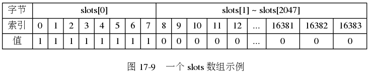
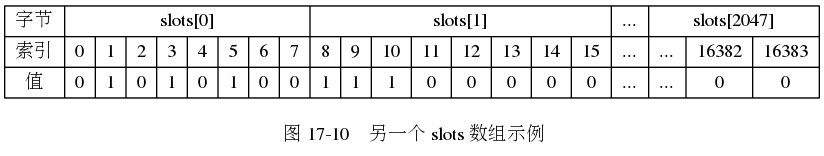
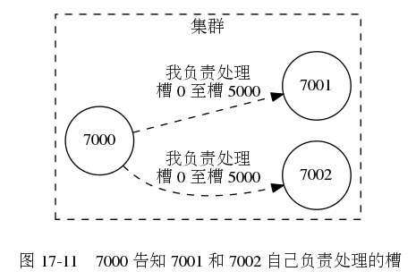
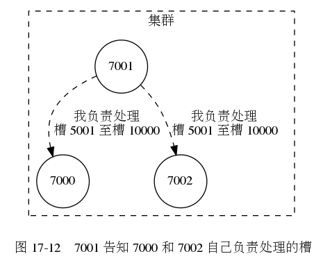
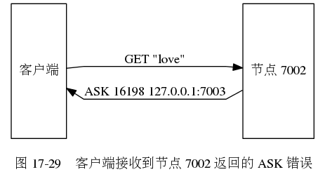
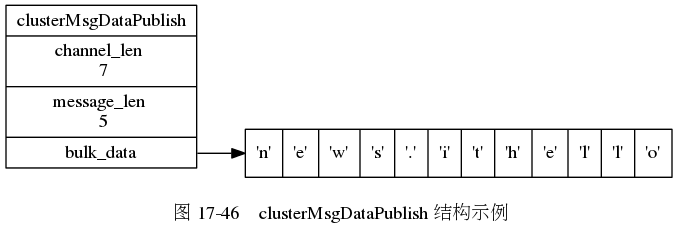

第 17 章： 集群¶
![digraph {
label = "\n 图 17-1 三个独立的节点";
node [shape = circle];
subgraph cluster_a {
label = "集群";
style = dashed;
7000;
}
subgraph cluster_b {
label = "集群";
style = dashed;
7001;
}
subgraph cluster_c {
label = "集群";
style = dashed;
7002;
}
}](_images/graphviz-48a6e832e37169c30c009a0cb16bd028d3ed804c.png)
![digraph {
label = "\n 图 17-2 节点 7000 和 7001 进行握手";
rankdir = LR;
node [shape = circle];
subgraph cluster_a {
label = "集群";
style = dashed;
7000;
}
subgraph cluster_b {
label = "集群";
style = dashed;
7001;
}
subgraph cluster_c {
label = "集群";
style = dashed;
7002;
}
7000 -> 7001 [label = "握手"];
7000 -> 7001 [dir = back, label = "响应握手"];
}](_images/graphviz-c8a86ea8adabce15d5ef2568150a94d7c13d5b77.png)
![digraph {
label = "\n 图 17-7 节点 7000 创建的 clusterState 结构";
rankdir = LR;
//
node [shape = record];
clusterState [label = " <head> clusterState | <myself> myself | currentEpoch \n 0 | state \n REDIS_CLUSTER_FAIL | size \n 0 | <nodes> nodes | ... "];
nodes [label = " <head> nodes | <0> \"5154...2939\" | <1> \"68ee...f2ff\" | <2> \"9dfb...5c26\" "];
node7000 [label = " <head> clusterNode | name \n \"5154...2939\" | flags \n REDIS_NODE_MASTER | configEpoch \n 0 | ip \n \"127.0.0.1\" | port \n 7000 | ... "];
node7001 [label = " <head> clusterNode | name \n \"68ee...f2ff\"| flags \n REDIS_NODE_MASTER | configEpoch \n 0 | ip \n \"127.0.0.1\" | port \n 7001 | ... "];
node7002 [label = " <head> clusterNode | name \n \"9dfb...5c26\"| flags \n REDIS_NODE_MASTER | configEpoch \n 0 | ip \n \"127.0.0.1\" | port \n 7002 | ... "];
//link7000 [label = " <head> clusterLink | ctime | fd | sndbuf | rcvbuf "];
clusterState:myself -> node7000:head;
clusterState:nodes -> nodes:head;
nodes:0 -> node7000:head;
nodes:1 -> node7001:head;
nodes:2 -> node7002:head;
}](_images/graphviz-9918e854bcc7de909d8ddac20b76618568e75723.png)
![digraph {
label = "\n 图 17-8 节点的握手过程";
rankdir = LR;
splines = polyline;
//
node [shape = box, height = 2];
client [label = "客\n户\n端"];
A [label = "节\n点\nA"];
B [label = "节\n点\nB"];
//
client -> A [label = "发送命令 \n CLUSTER MEET \n <B_ip> <B_port>"];
A -> B [label = "发送 MEET 消息"];
A -> B [dir = back, label = "\n返回 PONG 消息"];
A -> B [label = "\n返回 PING 消息"];
}](_images/graphviz-c3f19dd40ff14db891e429fb5d9e9a80182aa3ca.png)
槽指派¶
图 17-9 展示了一个 slots 数组示例：
这个数组索引 0 至索引 7 上的二进制位的值都为 1 ，
其余所有二进制位的值都为 0 ，
这表示节点负责处理槽 0 至槽 7 。

图 17-10 展示了另一个 slots 数组示例：
这个数组索引 1 、 3 、 5 、 8 、 9 、 10 上的二进制位的值都为 1 ，
而其余所有二进制位的值都为 0 ，
这表示节点负责处理槽 1 、 3 、 5 、 8 、 9 、 10 。

节点之间互相传递槽指派信息的过程。


![digraph {
label = "\n 图 17-13 7002 告知 7000 和 7001 自己负责处理的槽";
rankdir = BT;
subgraph cluster_a {
label = "集群";
labelloc = "b";
style = dashed;
node [shape = circle];
7000;
7002;
7001;
edge [style = dashed, label = "我负责处理\n槽 10001 至槽 16383"];
7002 -> 7000;
7002 -> 7001;
}
}](_images/graphviz-4982f6dbedb170f9a0aa82d981f3618088a0914b.png)
clusterState 结构的 slots 数组示例。
![digraph {
label = "\n 图 17-14 clusterState 结构的 slots 数组";
rankdir = LR;
node [shape = record];
clusterState [label = " clusterState | ... | <slots> slots | ... "];
slots [label = " <head> clusterNode*[16384] | <0> 0 | <1> 1 | <2> ... | <5000> 5000 | <5001> 5001 | <5002> 5002 | <5003> ... | <10000> 10000 | <10001> 10001 | <10002> 10002 | <10003> ... | <16383> 16383 "];
node7000 [label = " <head> clusterNode | ... | ip \n \"127.0.0.1\" | port \n 7000 | ... "];
node7001 [label = " <head> clusterNode | ... | ip \n \"127.0.0.1\" | port \n 7001 | ... "];
node7002 [label = " <head> clusterNode | ... | ip \n \"127.0.0.1\" | port \n 7002 | ... "];
slots:0 -> node7000:head;
slots:1 -> node7000:head;
slots:2 -> node7000:head;
slots:5000 -> node7000:head;
slots:5001 -> node7001:head;
slots:5002 -> node7001:head;
slots:5003 -> node7001:head;
slots:10000 -> node7001:head;
slots:10001 -> node7002:head;
slots:10002 -> node7002:head;
slots:10003 -> node7002:head;
slots:16383 -> node7002:head;
clusterState:slots -> slots:head;
}](_images/graphviz-dbc5b814af27f83c1ce4731898f00bbbc10ca688.png)
![digraph {
label = "\n 图 17-18 判断客户端是否需要转向的流程";
node [shape = box];
client_send_command [label = "客户端向节点发送数据库键命令", width = 7];
get_slot_number [label = "节点计算键属于哪个槽"];
node_handle_right_slot_or_not [label = "当前节点就是\n负责处理键所在槽的节点？", shape = diamond];
execute_command [label = "节点执行命令"];
return_moved [label = "节点向客户端返回一个\n MOVED 错误"];
client_redirect [label = "客户端根据 MOVED 错误提供的信息\n转向至正确的节点"];
//
client_send_command -> get_slot_number;
get_slot_number -> node_handle_right_slot_or_not;
node_handle_right_slot_or_not -> execute_command [label = "是"];
node_handle_right_slot_or_not -> return_moved [label = "不是"];
return_moved -> client_redirect;
client_redirect -> client_send_command [label = "重试"];
}](_images/graphviz-6f36d23c96de411c52b064521b087ba8bda9ccd8.png)
![digraph {
rankdir = LR;
node [shape = record, width = "0.5"];
//
l [label = " <header> header | <tail> tail | level \n 5 | length \n 3 "];
subgraph cluster_nodes {
style = invisible;
header [label = " <l32> L32 | ... | <l5> L5 | <l4> L4 | <l3> L3 | <l2> L2 | <l1> L1 "];
bw_null [label = "NULL", shape = plaintext];
level_null [label = "NULL", shape = plaintext];
A [label = " <l4> L4 | <l3> L3 | <l2> L2 | <l1> L1 | <backward> BW | 1337.0 | StringObject \n \"book\" "];
B [label = " <l2> L2 | <l1> L1 | <backward> BW | 2022.0 | StringObject \n \"date\" "];
C [label = " <l5> L5 | <l4> L4 | <l3> L3 | <l2> L2 | <l1> L1 | <backward> BW | 3347.0 | StringObject \n \"lst\" "];
}
subgraph cluster_nulls {
style = invisible;
n1 [label = "NULL", shape = plaintext];
n2 [label = "NULL", shape = plaintext];
n3 [label = "NULL", shape = plaintext];
n4 [label = "NULL", shape = plaintext];
n5 [label = "NULL", shape = plaintext];
}
//
l:header -> header;
l:tail -> C;
/*
// 移除连接线的 span 分值
header:l32 -> level_null [label = "0"];
header:l5 -> C:l5 [label = "3"];
header:l4 -> A:l4 [label = "1"];
header:l3 -> A:l3 [label = "1"];
header:l2 -> A:l2 [label = "1"];
header:l1 -> A:l1 [label = "1"];
A:l4 -> C:l4 [label = "2"];
A:l3 -> C:l3 [label = "2"];
A:l2 -> B:l2 [label = "1"];
A:l1 -> B:l1 [label = "1"];
B:l2 -> C:l2 [label = "1"];
B:l1 -> C:l1 [label = "1"];
C:l5 -> n5 [label = "0"];
C:l4 -> n4 [label = "0"];
C:l3 -> n3 [label = "0"];
C:l2 -> n2 [label = "0"];
C:l1 -> n1 [label = "0"];
*/
header:l32 -> level_null;
header:l5 -> C:l5;
header:l4 -> A:l4;
header:l3 -> A:l3;
header:l2 -> A:l2;
header:l1 -> A:l1;
A:l4 -> C:l4;
A:l3 -> C:l3;
A:l2 -> B:l2;
A:l1 -> B:l1;
B:l2 -> C:l2;
B:l1 -> C:l1;
C:l5 -> n5;
C:l4 -> n4;
C:l3 -> n3;
C:l2 -> n2;
C:l1 -> n1;
bw_null -> A:backward -> B:backward -> C:backward [dir = back];
label = "\n 图 17-23 节点 7000 的 slots_to_keys 跳跃表";
}](_images/graphviz-7d8c052c7993e1861781c7f3191c28d8aca8318b.png)
![digraph {
label = "\n 图 17-24 迁移键的过程";
rankdir = LR;
splines = polyline;
//
node [shape = box, height = 3];
client [label = "redis-trib"];
source [label = "源\n节\n点"];
target [label = "目\n标\n节\n点"];
//
client -> source [label = "1) 发送命令 \n CLUSTER GETKEYSINSLOT <slot> <count>"];
client -> source [dir = back, label = "\n 2) 返回最多 count 个属于槽 slot 的键"];
client -> source [label = "\n 3) 对于每个返回键\n向源节点发送一个 MIGRATE 命令"];
source -> target [label = "\n 4) 根据 MIGRATE 命令的指示 \n 将键迁移至目标节点"];
}](_images/graphviz-fba74127c3849e540cea49200ee809b01f8c8a27.png)
![digraph {
label = "\n 图 17-25 对槽 slot 进行重新分片的过程"
node [shape = box]
start [label = "开始对槽 slot 进行重新分片"]
send_importing_to_target [label = "目标节点准备导入槽 slot 的键值对"];
send_migrating_to_source [label = "源节点准备迁移槽 slot 的键值对"];
start -> send_importing_to_target -> send_migrating_to_source;
contain_slot_key_or_not [shape = diamond, label = "源节点是否保存了\n属于槽 slot 的键？"]
migrate [label = "将这些键\n全部迁移至目标节点"]
assign [label = "将槽 slot 指派给目标节点"]
done [label = "完成对槽 slot 的重新分片"]
send_migrating_to_source -> contain_slot_key_or_not
contain_slot_key_or_not -> migrate [label = "是"]
migrate -> assign
contain_slot_key_or_not -> assign [label = "否"]
assign -> done
}](_images/graphviz-fe3255f5de0cbab6f74ac113827dcf4f34ea65fe.png)
ASK 错误¶
源节点判断是否需要向客户端发送 ASK 错误的整个过程。
![digraph {
label = "\n 图 17-26 判断是否发送 ASK 错误的过程";
//
node [shape = box];
send_command [label = "客户端向源节点发送关于键 key 的命令"];
key_in_or_not [label = "键 key 是否存在于\n源节点的数据库？", shape = diamond];
execute_command [label = "节点执行客户端发送的命令"];
reshaing_or_not [label = "节点正在迁移槽 i ？", shape = diamond];
ask_redirect [label = "向客户端返回 ASK 错误"];
//
send_command -> key_in_or_not;
key_in_or_not -> execute_command [label = "是"];
key_in_or_not -> reshaing_or_not [label = "否"];
reshaing_or_not -> ask_redirect [label = "是\n键 key 有可能在目标节点"];
reshaing_or_not -> execute_command [label = "否\n键 key 不存在"];
}](_images/graphviz-e2c71f49318a6636a74534d4517ffa173c27dae0.png)
importing_slots_from 结构以及 migrating_slots_to 结构的示例。
![digraph {
label = "\n 图 17-27 节点 7003 的 importing_slots_from 数组";
rankdir = LR;
//
node [shape = record];
clusterState [label = " clusterState | ... | <slots> importing_slots_from | ... "];
slots [label = " <head> clusterNode*[16384] | <0> 0 | <1> 1 | <2> 2 | <3> ... | <16198> 16198 | <15002> ... | <16381> 16381 | <16382> 16382 | <16383> 16383 "];
node7002 [label = " <head> clusterNode | ... | ip \n \"127.0.0.1\" | port \n 7002 | ... "];
node [shape = plaintext, label = "NULL"];
//
slots:0 -> null0;
slots:1 -> null1;
slots:2 -> null2;
slots:16198 -> node7002:head [minlen = 2];
slots:16381 -> null16381;
slots:16382 -> null16382;
slots:16383 -> null16383;
clusterState:slots -> slots:head;
}](_images/graphviz-3065976827e7ea7bacc5b89104167644953d14cb.png)
![digraph {
label = "\n 图 17-28 节点 7002 的 migrating_slots_to 数组";
rankdir = LR;
//
node [shape = record];
clusterState [label = " clusterState | ... | <slots> migrating_slots_to | ... "];
slots [label = " <head> clusterNode*[16384] | <0> 0 | <1> 1 | <2> 2 | <3> ... | <16198> 16198 | <15002> ... | <16381> 16381 | <16382> 16382 | <16383> 16383 "];
node7003 [label = " <head> clusterNode | ... | ip \n \"127.0.0.1\" | port \n 7003 | ... "];
node [shape = plaintext, label = "NULL"];
//
slots:0 -> null0;
slots:1 -> null1;
slots:2 -> null2;
slots:16198 -> node7003:head [minlen = 2];
slots:16381 -> null16381;
slots:16382 -> null16382;
slots:16383 -> null16383;
clusterState:slots -> slots:head;
}](_images/graphviz-ed29e688b1313357de5bffdce9f6e021cd3c7f7e.png)
客户端根据 ASK 错误进行转向的过程。

![digraph {
label = "\n 图 17-30 客户端转向至节点 7003";
rankdir = LR;
splines = polyline
//
node [shape = box, height = 3];
client [label = "客户端"];
node7003 [label = "节点 7003"];
//
client -> node7003 [label = "转向"];
client -> node7003 [label = "ASKING"];
client -> node7003 [label = "\n GET \"love\""];
client -> node7003 [dir = back, label = "\n\"you get the key 'love'\""];
}](_images/graphviz-75e479adc85e31d1d84e0e00d53a954bd23c7f16.png)
节点判断是否执行客户端命令的过程。
![digraph {
label = "\n 图 17-31 节点判断是否执行客户端命令的过程";
node [shape = box];
//
send_command [label = "客户端向节点发送关于槽 i 的命令"];
node_handle_slot_or_not [shape = diamond, label = "槽 i 是否指派给了节点？"];
exec_command [label = "节点执行客户端发送的命令"];
importing_slot_or_not [shape = diamond, label = "节点是否正在导入槽 i ？"];
client_get_asking_flag_or_not [shape = diamond, label = "客户端是否带有 \n ASKING 标识？"];
return_moved [label = "节点向客户端返回 MOVED 命令"];
//
send_command -> node_handle_slot_or_not;
node_handle_slot_or_not -> exec_command [label = "是"];
node_handle_slot_or_not -> importing_slot_or_not [label = "否"];
importing_slot_or_not -> client_get_asking_flag_or_not [label = "是"];
client_get_asking_flag_or_not -> exec_command [label = "是"];
importing_slot_or_not -> return_moved [label = "否"];
client_get_asking_flag_or_not -> return_moved [label = "否"];
}](_images/graphviz-b5c4a372c2e4808f4b355402bb92993399b93b1a.png)
![digraph {
label = "\n 图 17-32 设置节点 7004 和节点 7005 成为节点 7000 的从节点";
rankdir = LR;
subgraph cluster_a {
label = "集群";
style = dashed;
node [shape = doublecircle]
7000;
7001;
7002;
7003;
node [shape = circle]
7005;
7004;
edge [dir = back, label = "复制"]
7000 -> 7004
7000 -> 7005
edge [style = invis, label = ""]
7002 -> 7003
}
}](_images/graphviz-6524fa7af415bc0a44b4a758ea77d11dd2636705.png)
![digraph {
label = "\n 图 17-33 节点 7004 成为新的主节点";
rankdir = LR;
subgraph cluster_a {
label = "集群";
style = dashed;
node [shape = doublecircle];
7000 [style = dashed]
7001;
7002;
7003;
7004;
node [shape = circle]
7005;
edge [dir = back, label = "复制"]
7004 -> 7005
edge [style = invis, label = ""]
7000 -> 7001
7002 -> 7003
}
}](_images/graphviz-fe0e19a121e5b75eb82ccacfa6215c26c0ae8e39.png)
![digraph {
label = "\n 图 17-34 重新上线的节点 7000 成为节点 7004 的从节点";
rankdir = LR;
subgraph cluster_a {
label = "集群";
style = dashed;
node [shape = doublecircle];
7001;
7002;
7003;
7004;
node [shape = circle]
7000
7005;
edge [dir = back, label = "复制"]
7004 -> 7005
7004 -> 7000
edge [style = invis, label = ""]
7001 -> 7002 -> 7003
}
}](_images/graphviz-9dc2a416a4fd1f6e3b43da2b134e40c706da600a.png)
![digraph {
label = "\n 图 17-38 节点 7000 的下线报告"
rankdir = LR
node [shape = record]
node7000 [label = " <head> clusterNode | ... | flags \n REDIS_NODE_MASTER \n & \n REDIS_NODE_PFAIL | ip \n \"127.0.0.1\" | port \n 7000 | <fail_reports> fail_reports | ... "]
node7002 [label = " <head> clusterNode | ... | flags \n REDIS_NODE_MASTER | ip \n \"127.0.0.1\" | port \n 7002 | ... "]
node7003 [label = " <head> clusterNode | ... | flags \n REDIS_NODE_MASTER | ip \n \"127.0.0.1\" | port \n 7003 | ... "]
report7002 [label = " <head> clusterNodeFailReport | <pnode> node | time \n 1390525039000"]
report7003 [label = " <head> clusterNodeFailReport | <pnode> node | time \n 1390525039321"]
node7000:fail_reports -> report7002:head -> report7003:head
report7002:pnode -> node7002:head
report7003:pnode -> node7003:head
}](_images/graphviz-1c0cfe14e966f5288e61b6e9ac43465aea156bde.png)
![digraph {
label = "\n 图 17-39 节点 7001 向集群广播 FAIL 消息"
rankdir = LR;
subgraph cluster_a {
label = "集群";
style = dashed;
node [shape = doublecircle]
7000 [style = dashed]
7001;
7002;
7003;
node [shape = circle]
7004;
7005;
edge [dir = back, label = "复制"]
7000 -> 7004
7000 -> 7005
edge [dir = forward, label = "发送 FAIL 消息"]
7001 -> 7002
7001 -> 7003
7001 -> 7004
7001 -> 7005
}
}](_images/graphviz-c591fae308f56fa399fa9e52156bd2a568b144bf.png)
消息¶
集群中的节点通过发送消息来将一个节点标记为下线的过程。
![digraph {
label = "\n 图 17-42 节点 7001 将节点 7000 标记为已下线";
node [shape = circle];
subgraph cluster_cluster {
label = "集群";
node7000 [label = "7000", style = dashed];
node7001 [label = "7001"];
node7002 [label = "7002"];
node7003 [label = "7003"];
node7001 -> node7000 [label = "标记为\n已下线"];
edge [style = invis];
node7001 -> node7002 [label = "发送 FAIL 消息"];
node7001 -> node7003 [label = "发送 FAIL 消息"];
style = dashed;
}
}](_images/graphviz-74e2b6c26627aedbdd10295cfddd6bf6ee29d9ac.png)
![digraph {
label = "\n 图 17-43 节点 7001 向集群广播 FAIL 消息";
node [shape = circle];
subgraph cluster_cluster {
label = "集群";
node7000 [label = "7000", style = dashed];
node7001 [label = "7001"];
node7002 [label = "7002"];
node7003 [label = "7003"];
node7001 -> node7000 [style = invis];
edge [label = "发送 \nFAIL 消息"];
node7001 -> node7002;
node7001 -> node7003;
style = dashed;
}
}](_images/graphviz-e2e030e0a517bddc4c8c542b6876efeed2469941.png)
![digraph {
label = "\n 图 17-44 节点 7002 和节点 7003 也将节点 7000 标记为已下线";
node [shape = circle];
subgraph cluster_cluster {
label = "集群";
node7003 [label = "7003"];
node7002 [label = "7002"];
node7001 [label = "7001"];
node7000 [label = "7000", style = dashed];
node7001 -> node7000 [style = invis];
edge [label = "标记为\n已下线"];
node7002 -> node7000;
node7003 -> node7000;
style = dashed;
}
}](_images/graphviz-c4408a7984bbcfdb233e87165044e609a7846ae2.png)
接收到 PUBLISH 命令的节点向集群中的其他节点发送 PUBLISH 消息。
![digraph {
label = "\n 图 17-45 接收到 PUBLISH 命令的节点 7000 向集群广播 PUBLISH 消息";
node [shape = circle];
rankdir = LR;
client [label = "客户端"];
subgraph cluster_cluster {
label = "集群";
node7003 [label = "7003"];
node7002 [label = "7002"];
node7001 [label = "7001"];
node7000 [label = "7000"];
edge [label = "发送 \n PUBLISH \n 消息"];
node7000 -> node7001;
node7000 -> node7002;
node7000 -> node7003;
style = dashed;
}
client -> node7000 [label = "发送 \n PUBLISH \n 命令"];
}](_images/graphviz-a6bed3355b74c4c1790c715812e50149bbec36c4.png)
PUBLISH 消息中包含的 clusterMsgDataPublish 结构示例。
